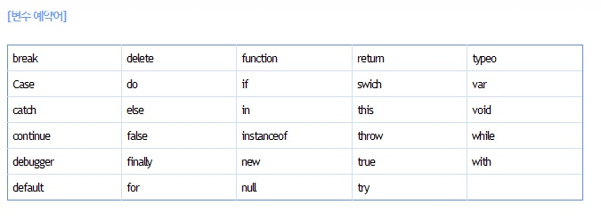

[자바스크립트 변수란?]
스크립트는 자신의 작업을 시작하는 동안 어떤 정보들을 임시로 저장해야 할 필요가 있다.이때 스크립트가 데이터를 저장해 둘 수 있는 어떤 것을 변수라고 한다.
1. 자바스크립트 변수의 종류
- 전역변수: 문서 전체에 영향을 주는 변수로, 영역(함수)에 관계없이 어디에서든지 사용이 가능한 변수
- 지역변수: 함수내에서 선언되어 사용되는 변수로 그 함수 내에서만 영향력을 가지는 면수이며, 함수를 호출하였을 경우에만 변수로 작동하다가 함수가 종료되면 소멸되는 변수를 말한다.
변수의 선언 방법?
- 변수는 반드시 영문 대소문자가 와야 한다. ex)Aa01, aA01
- 변수명 첫글자에는 숫자가 올 수 없다. ex) 01Aa, 01_Aa
- 변수명 사이에는 스페이스(공백) 공간을 둘 수 없다.ex)count 01
- 변수명은 영문 대소문자를 구분한다. ex)Aa !=aA
- 변수명으로 색상이 변하는 단어(예약어)는 사용할 수 없다. ex)var, if, break 등...
- 변수명에는 특수기호를 사용할 수 없다.(단,'$'와 '_'는 사용가능! ex)$Aa,_Aa
- 변수명은 의미를 담을 수 있는 이름으로 지정하고, 일명 낙타봉(카멜표기법)으로 작성할 것을 권장한다. ex)imagename(X) / imagesName(O)
